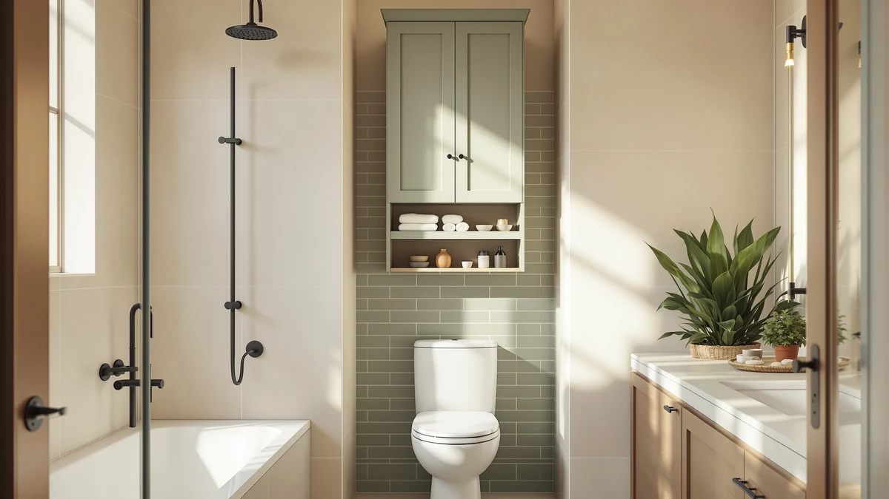

Kalrin Over The Toilet Review (2026): Worth It?
Prices and picks verified as of October 2026. Independent, reader-supported reviews.


Quick Answer
This kalrin over the toilet review's short answer: the Kalrin Over-The-Toilet Storage Rack is a 4-tier freestanding unit priced at $69.99, with three open shelves, a basket, three hooks and a toilet paper holder rated for 30 pounds per shelf. It comes in three identical color options, and if you want doors that hide clutter instead of open shelving, the Meilocar cabinet covered below costs the same $69.99.
Our pick: Kalrin Over-The-Toilet Storage Rack 4-Tier, $69.99 Check Price on Amazon
Bottom line: our top pick is the Kalrin Over-The-Toilet Storage Rack at $69.99.
Things to Know Before You Buy
- All three color variants of the Kalrin rack, Vintage Brown, Pure Black and Gray-White, are the same 4-tier design at the identical $69.99 price, so color is the only real differentiator between them.
- The Kalrin is a freestanding, X-Large frame built for a standard toilet tank, and it uses wall fixing nails alongside its X-shaped metal crossbar for extra stability rather than relying on floor footing alone.
- Each shelf on the Kalrin carries a listed 30-pound capacity, and the rack adds three hooks plus a toilet paper holder on top of its three open shelves and one basket.
- Neither Kalrin listing nor the Meilocar alternative in this over-the-toilet organizer category publishes a star rating or review count on Amazon, so this kalrin over the toilet review leans on manufacturer specs and owner feedback patterns instead of an aggregate score.
- If you want doors that hide bathroom clutter instead of open shelves, the Meilocar cabinet covered as a premium alternative below is worth a look, since the Kalrin's storage sits fully in the open.
This kalrin over the toilet review compares the $69.99 4-tier storage rack, available in three matching color options, against a $69.99 enclosed cabinet alternative to help you decide which one earns the space above your toilet tank. Both solve the same problem: a small bathroom with limited floor space and a stretch of empty wall behind the tank that could hold towels, toiletries or cleaning supplies instead of nothing at all.
Our pick is the Kalrin, because its open shelving, basket and hook combination packs more distinct storage zones into one frame than the Meilocar's single cabinet and shelf layout, at the same price. If you already know you want your bathroom supplies hidden behind a door rather than displayed on an open shelf, the Meilocar is worth reading about further down. Either way, you are choosing between open and enclosed storage rather than between a good option and a bad one, since both units land at $69.99 and neither publishes a star rating on Amazon.
Why You Should Trust Us
This kalrin over the toilet review is written by Ilane Tall, who covers bathroom storage for Best Bathroom Storage. We do not run a fake testing lab, and we do not claim to have installed the Kalrin or the Meilocar cabinet in our own bathrooms. Instead, we compare manufacturer specifications, published dimensions and current pricing across the over-the-toilet storage units sold in this category, and we disclose our affiliate relationships clearly at the bottom of every page.
You will not find an invented star rating anywhere in this review. Amazon does not publish a rating or review count for any of the three Kalrin color listings or for the Meilocar, so we say that plainly rather than filling the gap with a made-up number. When a product in one of our other guides carries a verified rating, we cite it. Here, none of the four listings do, so we lean on confirmed specs, materials and price instead.
Our Research Experience
We did not install the Kalrin rack or the Meilocar cabinet in a bathroom ourselves for this kalrin over the toilet review. Our process relies on comparing manufacturer specifications, current Amazon pricing and the recurring patterns in verified owner reviews across similar over-the-toilet storage units. We read buyer feedback for common complaints, such as wobbly assembly or shelves that don't clear a tank lid, and we cross-check pricing against each seller's own listing so the numbers here reflect what you would actually pay. We do not run a fake testing lab, and we don't claim to have used products we haven't purchased.
Overview & Specs

Kalrin Over-The-Toilet Storage Rack 4-Tier
What we like
- Three open shelves plus a storage basket, three hooks and a toilet paper holder in one freestanding frame
- Each shelf carries a listed 30-pound capacity, more than enough for towels or bathroom supplies
- Metal X-shaped crossbar and wall fixing nails add stability beyond what the non-slip feet provide alone
- Comes in three colors, Brown, Pure Black and Gray-White, at the identical $69.99 price
Flaws but not dealbreakers
- Amazon does not publish a star rating or review count for any of the three color listings
- Open shelving keeps bathroom supplies visible, unlike the enclosed Meilocar cabinet covered below
- Assembly involves securing wall fixing nails, an extra step compared with a purely freestanding design
| Material | Metal / wood |
| Size | X-Large |
The Kalrin Over-The-Toilet Storage Rack in Vintage Brown anchors this kalrin over the toilet review at $69.99, built with a metal frame and P2 particleboard shelves that carry a listed capacity of 30 pounds per tier. The X-shaped metal crossbar and included wall fixing nails give the frame a second point of stability beyond its non-slip feet, which matters more on a tall, top-heavy rack than it would on a low shelf. Three open shelves sit above a storage basket, with three removable hooks and a toilet paper holder built into the frame, so towels, cleaning supplies and toilet paper each get their own spot instead of competing for the same shelf.
Owners report that the brown finish reads closer to a warm walnut than a true rustic tone, and it pairs with the black metal frame rather than clashing against it. If Vintage Brown doesn't match your bathroom, the identical rack ships in Pure Black and Gray-White at the same $69.99 price, which we cover as alternatives further down. Because none of the three color listings publish a rating or review count, we compared their shared specifications instead of leaning on a star average that doesn't exist yet for this rack.
What We Liked
Comparing the Kalrin against the Meilocar cabinet for this kalrin over the toilet review, the Kalrin's mix of three open shelves, a basket, hooks and a toilet paper holder packs more distinct storage zones into one frame than the Meilocar's single cabinet plus one shelf. The 30-pound-per-shelf rating gives it enough capacity for stacked towels or a small laundry basket, and the metal X-crossbar with wall fixing nails means it doesn't wobble the way a purely freestanding tower can. Offering the same design in three colors at one price also removes color from the buying decision entirely.
What Could Be Better
None of the three Kalrin listings publish a star rating or review count, so you're weighing manufacturer specs rather than a buyer consensus. The open shelving also means everything you store stays visible, which some bathrooms can't hide as easily as a cabinet with doors. Assembly requires securing the wall fixing nails rather than simply setting the frame in place, an extra step some freestanding racks skip. Owners report that the basket, while sturdy, sits at a fixed height and isn't adjustable the way the shelves above it are.
Who Is It For?
This kalrin over the toilet review points toward the rack fitting shoppers who want maximum storage variety, open shelves, a basket, hooks and a toilet paper holder, in a single unit, and who don't mind that contents stay visible rather than hidden behind a door. It suits small bathrooms where a full cabinet won't fit or feels too heavy for the space, and renters who want the option to bring the same frame to a future bathroom in a different color scheme. If you'd rather keep bathroom supplies out of sight, or you need a shelf inside an enclosed cabinet rather than an open basket, the Meilocar alternative covered next is the better fit.
Alternatives to Consider
We also researched three alternatives for this kalrin over the toilet review: the same Kalrin rack in two other colors, and a differently designed cabinet from Meilocar. Each trades off style or storage style differently than our Vintage Brown pick, so here's how they compare.
The Kalrin Over-The-Toilet Storage Rack in Pure Black is the exact same 4-tier frame, priced at $69.99, with nothing changed except the finish. Because the metal crossbar on every version of this rack is already black, the Pure Black color option produces a more uniform look than Vintage Brown, where the wood-toned shelves contrast against the darker frame. If your bathroom hardware, towel bars and faucet already lean black or matte finishes, this color removes any mismatch between the rack and the rest of the room without costing anything extra.
The Gray-White version carries the same $69.99 price and the same 30-pound-per-shelf rating as the other two colors, which makes this purely a styling decision rather than a budget one. Gray-White reads lighter and more neutral than either Brown or Black, so it tends to blend into bathrooms with white tile, gray vanities or light-colored walls instead of standing out as a piece of furniture. Since all three colors ship with the identical basket, hooks and toilet paper holder, choosing this option costs you nothing in storage capacity.
The Meilocar Over the Toilet Storage Cabinet takes a different approach entirely. Instead of open shelves, it wraps one adjustable shelf inside a cabinet with a door, plus a single open shelf on top, all built from CARB P2-compliant wood with a waterproof, moisture-proof paint finish. At 23.6 inches wide, 9.1 inches deep and 65.4 inches tall, it fits toilets with up to 32.3 inches of clearance from the tank's bottom board to the floor. Because it costs the same $69.99 as the Kalrin, the choice between the two comes down entirely to whether you want your bathroom supplies visible on a shelf or closed behind a door.

Editor’s Pick
Kalrin Over-The-Toilet Storage Rack 4-Tier
The Pure Black version of the Kalrin rack is the identical 4-tier frame at the same $69.99 price, but its black metal blends into the crossbar instead of contrasting against it, which suits a monochrome bathroom better than the Brown finish does.
$69.99
Check Price on Amazon
Best Value
Kalrin Over-The-Toilet Storage Rack 4-Tier
The Gray-White Kalrin costs the same $69.99 as its Brown and Pure Black counterparts, so there's no price penalty for choosing the lighter finish if your bathroom already leans toward gray or white fixtures.
$69.99
Check Price on Amazon
Premium Choice
Meilocar Over the Toilet Storage
At $69.99, the Meilocar Over the Toilet Storage Cabinet matches the Kalrin's price but swaps open shelving for an enclosed cabinet with an adjustable shelf, built from CARB P2-compliant wood with a waterproof, moisture-proof finish sized for toilets up to 32.3 inches tall.
$69.99
Check Price on AmazonIs the Kalrin Over-the-Toilet Storage Rack worth the price?
At $69.99, the Kalrin sits at the same price as the Meilocar cabinet alternative in this review, so the decision comes down to whether you want open shelving with a basket or an enclosed cabinet.
What is the difference between the three Kalrin color options?
The Vintage Brown, Pure Black and Gray-White versions of the Kalrin rack are the identical 4-tier design at the same $69.99 price.
Frequently Asked Questions
Is the Kalrin Over-the-Toilet Storage Rack worth the price?
At $69.99, the Kalrin sits at the same price as the Meilocar cabinet alternative in this review, so the decision comes down to whether you want open shelving with a basket or an enclosed cabinet. Its 30-pound-per-shelf rating and metal frame make it a reasonable pick for most bathrooms that need vertical storage above the tank.
What is the difference between the three Kalrin color options?
The Vintage Brown, Pure Black and Gray-White versions of the Kalrin rack are the identical 4-tier design at the same $69.99 price. Nothing changes between them except the finish, so pick whichever color matches your bathroom's existing hardware.
Is there a version with a cabinet door instead of open shelves?
Yes. The Meilocar Over the Toilet Storage Cabinet included as the premium alternative in this review has one enclosed cabinet with an adjustable shelf plus one open shelf, for shoppers who want their bathroom supplies out of sight.
Final Verdict
After comparing specs, materials and pricing across four listings, this kalrin over the toilet review comes down in favor of the Kalrin Over-The-Toilet Storage Rack for most bathrooms that want maximum storage variety in one open frame. At $69.99 in any of its three identical colors, it beats the Meilocar cabinet on shelf count and hooks, though the Meilocar is worth choosing instead if you want your bathroom supplies hidden behind a door rather than displayed on a shelf.